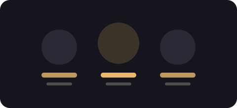

Project author
Alimurat Nurbakyt · SE-2512
Student project · SE-2512
CineVault is a solo student project by Alimurat Nurbakyt, built for people who start five series and finish two. The catalog is live, the vault is personal, and the interface stays out of the way.

Alimurat Nurbakyt · SE-2512
Students, couples, and friends who want a shared language for “what’s next” without another social network.
Search real titles, save a short list, and keep an account on this device so your profile and watchlist survive a refresh.
HTML, CSS Grid/Flexbox, vanilla JavaScript, TVMaze, and localStorage. No backend.
Sign up stores your name, email, phone, and password in localStorage. Log in checks those credentials and opens this device’s profile page.
Queries go to TVMaze. Genre filters run in the browser, and the last search is remembered so you can pick up later.
Save posters from home, catalog, or a title file. The watchlist is the same list on every page of this site.